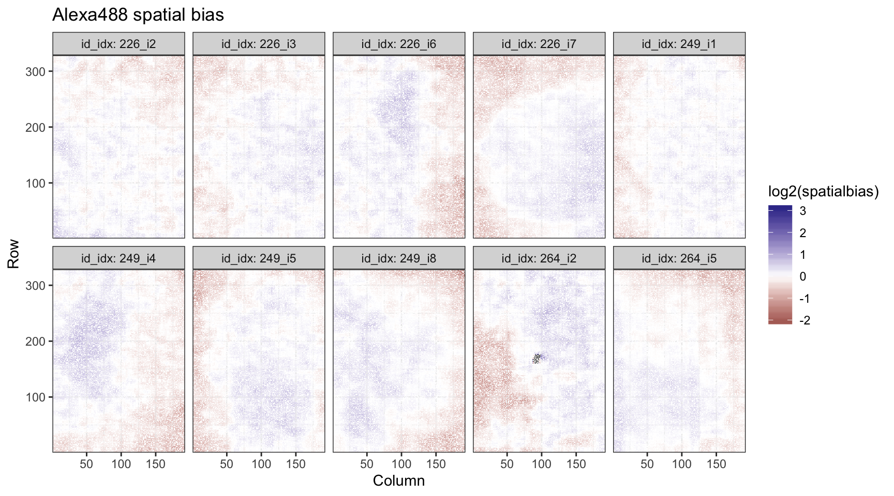

upbm: QC Plots
Patrick K. Kimes
11 February 2020
Source:vignettes/other-qcplots.Rmd
other-qcplots.RmdIntroduction
For an introduction to the upbm package, please see the quick start vignette (vignette("upbm-quickstart")). Here, we cover a few plots which can be used to QC PBM data. Several other these plots are also introduced in a separate vignette covering pre-processing steps in detail ( vignette("upbm-preprocessing")).
suppressPackageStartupMessages(library("upbm"))This vignette will be sparse in discription of how data is being processed and parsed and expects the reader has already worked through previous vignettes covering these details. If any step appears unclear, we recommend revisiting the complete list of vignettes included with the package.
Throughout, we will be using broom::tidy to tidy data stored in PBMExperiment and SummarizedExperiment objects for interactive analysis and plotting (see vignette("other-tidydata")). We load the dplyr and ggplot2 packages to help with interactive analysis.
suppressPackageStartupMessages(library("dplyr"))
suppressPackageStartupMessages(library("ggplot2"))HOXC9 Dataset
For details on the example HOXC9 dataset, see the quick start vignette in this package or the upbmData package vignette. Here, we will use both Alexa488 and Cy3 scans.
Here, we again use just single PMT gain scan for the Alexa488 scans.
QC: Raw Alexa488 Data
For exploratory analysis, we tidy both the foreground and background intensities from Alexa488 scans.
## # A tibble: 419,440 x 17
## Column Row probeID Sequence cname fore back date version id
## <int> <int> <chr> <chr> <chr> <dbl> <dbl> <dbl> <chr> <dbl>
## 1 6 1 dBr_14… GGTGTGA… s4 9522 471 170606 v14 226
## 2 7 1 dBr_06… CAGTCTA… s4 18050 503 170606 v14 226
## 3 8 1 dBr_39… CTTTTTA… s4 19591 505 170606 v14 226
## 4 9 1 dBr_06… CAGCTAC… s4 4150 430 170606 v14 226
## 5 10 1 dBr_05… GCTTCGA… s4 4499 399 170606 v14 226
## 6 15 1 dBr_16… CGCCCGT… s4 16744 520 170606 v14 226
## 7 23 1 dBr_20… TTAGCCC… s4 7032 867 170606 v14 226
## 8 24 1 dBr_25… TGCACAA… s4 3493 395 170606 v14 226
## 9 26 1 dBr_40… GGATGCC… s4 3231 314 170606 v14 226
## 10 27 1 dBr_21… GTCAGAA… s4 4323 317 170606 v14 226
## # … with 419,430 more rows, and 7 more variables: reuse <dbl>, type <chr>,
## # pmt <dbl>, idx <dbl>, target <chr>, condition <chr>, id_idx <chr>Intensity Distributions
We check to verify that probe intensities are not saturated. We plot the intensities on the log2-scale since these distributions are heavy-tailed. We split this plot by slide ID.
alexa_dat %>%
ggplot(aes(x = log2(fore), group = cname)) +
geom_density(fill = 'black', alpha = 1/4) +
theme_bw() +
facet_grid(. ~ id, labeller = label_both) +
ggtitle("Alexa488 foreground probe intensities")## Warning: Removed 544 rows containing non-finite values (stat_density).We can see that a few of the arrays on slide 226 are close to the upper limit of 2^16. We can explicitly count the number of probes that hit the boundary.
alexa_dat %>%
dplyr::group_by(cname, id, idx) %>%
dplyr::summarize(nSat = sum(fore > 2^15.99, na.rm = TRUE))## # A tibble: 10 x 4
## # Groups: cname, id [10]
## cname id idx nSat
## <chr> <dbl> <dbl> <int>
## 1 s17 249 1 1
## 2 s18 249 4 1
## 3 s19 249 5 1
## 4 s20 249 8 0
## 5 s33 264 2 0
## 6 s34 264 5 0
## 7 s4 226 2 15
## 8 s5 226 3 49
## 9 s6 226 6 2
## 10 s7 226 7 0We see that this is less than 100 probes. While this is not ideal, since we have replicate data, we are not particularly worried.
We also count the number of probes filtered in the GenePix software and flagged in the GPR file. These are set to NA in our data.
## # A tibble: 10 x 4
## # Groups: cname, id [10]
## cname id idx nFlag
## <chr> <dbl> <dbl> <int>
## 1 s17 249 1 0
## 2 s18 249 4 4
## 3 s19 249 5 0
## 4 s20 249 8 8
## 5 s33 264 2 530
## 6 s34 264 5 2
## 7 s4 226 2 0
## 8 s5 226 3 0
## 9 s6 226 6 0
## 10 s7 226 7 0Interestingly, we see that one sample has 500 probes flagged. We will want to keep this in mind as we continue exploring this data. It is possible that these 500 probes are spatially clustered on the array.
We next check the background intensities of the Alexa488 scans.
alexa_dat %>%
ggplot(aes(x = log2(back), group = cname)) +
geom_density(fill = 'black', alpha = 1/4) +
theme_bw() +
facet_grid(. ~ id, labeller = label_both) +
ggtitle("Alexa488 background probe intensities")## Warning: Removed 544 rows containing non-finite values (stat_density).Thes distributions are much more varied. We will want to see how these are spatially organized.
Finally, since foreground probe intensities should be corrected for background intensities, we need to check how many probes have lower foreground than background intensities.
alexa_dat %>%
dplyr::group_by(cname, id, idx) %>%
dplyr::summarize(nOverflow = sum(fore < back, na.rm = TRUE))## # A tibble: 10 x 4
## # Groups: cname, id [10]
## cname id idx nOverflow
## <chr> <dbl> <dbl> <int>
## 1 s17 249 1 5
## 2 s18 249 4 10
## 3 s19 249 5 7
## 4 s20 249 8 0
## 5 s33 264 2 63
## 6 s34 264 5 0
## 7 s4 226 2 6
## 8 s5 226 3 0
## 9 s6 226 6 28
## 10 s7 226 7 5This is only occurs at a fairly small number of probes.
Spatial Trends
Following up on the analysis above, we also check the spatial distribution of the probe intensities in the Alexa488 scans.
alexa_dat %>%
ggplot(aes(x = Column, y = Row, fill = log2(fore))) +
geom_tile() +
theme_bw() +
scale_x_continuous(expand = c(0, 0)) +
scale_y_continuous(expand = c(0, 0)) +
scale_fill_distiller(palette = "Spectral") +
facet_wrap(~ id_idx, labeller = label_both, nrow = 2) +
ggtitle("Alexa488 foreground probe intensities")We can see that clear spot where probes were filtered on the single array on slide 264.
alexa_dat %>%
ggplot(aes(x = Column, y = Row, fill = log2(back))) +
geom_tile() +
theme_bw() +
scale_x_continuous(expand = c(0, 0)) +
scale_y_continuous(expand = c(0, 0)) +
scale_fill_distiller(palette = "Spectral") +
facet_wrap(~ id_idx, labeller = label_both, nrow = 2) +
ggtitle("Alexa488 background probe intensities")We see that background intensities unsurprisingly higher at the center of arrays.
QC: Raw Cy3 Data
Again, we tidy both the foreground and background intensities from Cy3 scans.
## # A tibble: 419,440 x 17
## Column Row probeID Sequence cname fore back date version id
## <int> <int> <chr> <chr> <chr> <dbl> <dbl> <dbl> <chr> <dbl>
## 1 6 1 dBr_14… GGTGTGA… s13 5936 50 180326 v14 249
## 2 7 1 dBr_06… CAGTCTA… s13 5110 52 180326 v14 249
## 3 8 1 dBr_39… CTTTTTA… s13 6038 49 180326 v14 249
## 4 9 1 dBr_06… CAGCTAC… s13 4636 45 180326 v14 249
## 5 10 1 dBr_05… GCTTCGA… s13 5454 46 180326 v14 249
## 6 15 1 dBr_16… CGCCCGT… s13 6285 47 180326 v14 249
## 7 23 1 dBr_20… TTAGCCC… s13 5509 48 180326 v14 249
## 8 24 1 dBr_25… TGCACAA… s13 3418 48 180326 v14 249
## 9 26 1 dBr_40… GGATGCC… s13 2553 48 180326 v14 249
## 10 27 1 dBr_21… GTCAGAA… s13 3462 48 180326 v14 249
## # … with 419,430 more rows, and 7 more variables: reuse <dbl>, type <chr>,
## # pmt <dbl>, idx <dbl>, target <chr>, condition <chr>, id_idx <chr>Intensity Distributions
We can similarly take a look at the distribution of intensities for our Cy3 data.
cy3_dat %>%
ggplot(aes(x = log2(fore), group = cname)) +
geom_density(fill = 'black', alpha = 1/4) +
theme_bw() +
facet_grid(. ~ id, labeller = label_both) +
ggtitle("Cy3 foreground probe intensities")We see that the foreground Cy3 intensities are generally consistent across arrays and slides. We next check the background intensities of the Cy3 scans.
cy3_dat %>%
ggplot(aes(x = log2(back), group = cname)) +
geom_density(fill = 'black', alpha = 1/4) +
theme_bw() +
facet_grid(. ~ id, labeller = label_both) +
ggtitle("Cy3 background probe intensities")
We see a single Cy3 scan with higher background intensities. However, since background correction is performed on the non-log scale, the effect will be relatively minor.
## # A tibble: 1 x 1
## nOverflow
## <int>
## 1 0No probes have foreground intensity lower than background.
Spatial Trends
While we don’t expect anything particularly alarming in the Cy3 scan foreground intensities based on the distribution plots above, we will still plot the intensities with spatial information.
cy3_dat %>%
ggplot(aes(x = Column, y = Row, fill = log2(fore))) +
geom_tile() +
theme_bw() +
scale_x_continuous(expand = c(0, 0)) +
scale_y_continuous(expand = c(0, 0)) +
scale_fill_distiller(palette = "Spectral") +
facet_wrap(~ id_idx, labeller = label_both, nrow = 2) +
ggtitle("Cy3 foreground probe intensities")Not surprisingly, we see nothing striking in this plot.
cy3_dat %>%
ggplot(aes(x = Column, y = Row, fill = log2(back))) +
geom_tile() +
theme_bw() +
scale_x_continuous(expand = c(0, 0)) +
scale_y_continuous(expand = c(0, 0)) +
scale_fill_distiller(palette = "Spectral") +
facet_wrap(~ id_idx, labeller = label_both, nrow = 2) +
ggtitle("Cy3 background probe intensities")While we see a bit of unusual background Cy3 behavior in array 7 of slide 226, again, because the scale is much lower than the measured foreground intensities, we are not particularly worried.
Observed/Expected Ratios
Importantly, Cy3 scans are used to adjusting for differences in double-stranding across arrays. This is done by computing an observed-to-expected ratio and scaling by this factor. We will take a look at the distribution and spatial trends of these ratios.
data("refcy3_8x60k_v1", package = "upbmAux")
cy3_fit <- cy3FitEmpirical(pe = hoxc9cy3,
refpe = refcy3_8x60k_v1)We also tidy up this data to look at the ratios.
We can now look at the distribution of ratios.
cy3fit_dat %>%
ggplot(aes(x = log2(ratio), group = id_idx)) +
geom_density(color = 'black', fill = 'black', alpha = 1/4) +
facet_grid(. ~ id, labeller = label_both) +
geom_vline(xintercept = 0) +
theme_bw() +
ggtitle("Cy3 observed-to-expected ratios")In general, ratios appear to be relatively small for most arrays, with clear slide-level differences. Additionally, we can also check the “scores” computed by scaling observed-to-expected ratios to account for observed empirical differences in variability of Cy3 intensities across probes. While not used for scaling, these values are used for filtering Cy3 outlier probes.
cy3fit_dat %>%
ggplot(aes(x = (scores), group = id_idx)) +
geom_density(color = 'black', fill = 'black', alpha = 1/4) +
facet_grid(. ~ id, labeller = label_both) +
geom_vline(xintercept = 0) +
geom_vline(xintercept = c(-1/2, 1/2), lty = 2, alpha = 1/2) +
theme_bw() +
ggtitle("Cy3 observed-to-expected scores")Vertical lines are drawn at the default limits for filtering. Very few probes appear to be filtered. We can also count how many are filtered.
cy3fit_dat %>%
dplyr::group_by(id, idx) %>%
dplyr::summarize(nFilter = sum(lowq, na.rm = TRUE),
pFilter = round(mean(lowq, na.rm = TRUE), 3))## # A tibble: 10 x 4
## # Groups: id [3]
## id idx nFilter pFilter
## <dbl> <dbl> <int> <dbl>
## 1 226 2 17 0
## 2 226 3 0 0
## 3 226 6 3 0
## 4 226 7 0 0
## 5 249 1 5 0
## 6 249 4 0 0
## 7 249 5 0 0
## 8 249 8 1 0
## 9 264 2 1770 0.042
## 10 264 5 1195 0.028Some probes are filtered at this cutoff from slide 264. However, since this accounts for less than 5% of probes, we are again not too worried.
QC: Spatial Bias
More formally, we also take a look at the spatial bias after background subtraction and Cy3 normalization across Alexa488 scans.
alexa_bsi <- backgroundSubtract(alexa_subset)
alexa_cyn <- cy3Normalize(alexa_bsi, cy3_fit)
alexa_spa <- spatiallyAdjust(alexa_cyn)
spa_dat <- broom::tidy(alexa_spa, c("normalized", "spatialbias"))We can now take a look at the spatial bias.
spa_dat %>%
ggplot(aes(x = log2(spatialbias), group = id_idx)) +
geom_density(color = 'black', fill = 'black', alpha = 1/4) +
facet_grid(. ~ id, labeller = label_both) +
geom_vline(xintercept = 0) +
theme_bw() +
ggtitle("Alexa488 spatial bias")## Warning: Removed 96 rows containing non-finite values (stat_density).While spatial bias is generally noisy, we don’t see any large deviations outside a single fold change from the global median. We can also plot this to see how biases are positioned across the arrays.
spa_dat %>%
ggplot(aes(x = Column, y = Row, fill = log2(spatialbias))) +
geom_tile() +
theme_bw() +
scale_x_continuous(expand = c(0, 0)) +
scale_y_continuous(expand = c(0, 0)) +
scale_fill_gradient2() +
facet_wrap(~ id_idx, labeller = label_both, nrow = 2) +
ggtitle("Alexa488 spatial bias")
This looks reasonable.
QC: Across Replicates
All previous plots examined probe-level biases for individual samples. Next, we perform cross-sample normalization.
alexa_nwr <- normalizeWithinReplicates(alexa_spa)
alexa_nar <- normalizeAcrossReplicates(alexa_nwr)
norm_dat <- broom::tidy(alexa_nar, "normalized", long = TRUE)Given fully normalized data, we can also take a look at the distribution of intensities across replicates of the same condition.
Intensity Distributions
We plot the distributions across replicates.
norm_dat %>%
ggplot(aes(x = log2(normalized), group = id_idx)) +
geom_density(color = 'black', fill = 'black', alpha = 1/4) +
facet_grid(. ~ condition, labeller = label_both) +
theme_bw() +
ggtitle("Alexa488 normalized intensities")## Warning: Removed 3621 rows containing non-finite values (stat_density).Distributions appear to generally agree, but we see some variability in the R222W allele. This may be due to the generally lower binding affinity compared to other alleles. Plotting all together, this becomes clear.
norm_dat %>%
ggplot(aes(x = log2(normalized), group = id_idx, color = condition)) +
geom_density() +
scale_color_brewer(palette = "Set1") +
theme_bw() +
ggtitle("Alexa488 normalized intensities")## Warning: Removed 3621 rows containing non-finite values (stat_density).All samples are identical with the exception of the R222W replicates.
Agreement
We can also create scatterplots to compare probe-level agreement across replicates. First, we compare the replicate conditions across slides.
norm_dat %>%
dplyr::filter(condition == "HOXC9-REF") %>%
dplyr::mutate(normalized = log2(normalized)) %>%
dplyr::select(id, probeID, normalized) %>%
tidyr::spread(id, normalized) %>%
dplyr::select(-probeID) %>%
as.matrix() %>%
pairs(col = rgb(0, 0, 0, 1/10), cex = .4,
main = "Alex488 normalized intensities; HOXC9-REF reps")These appear to agree incredibly well. We can also check the R222W replicates.
norm_dat %>%
dplyr::filter(condition == "HOXC9-R222W") %>%
dplyr::mutate(normalized = log2(normalized)) %>%
dplyr::select(id, probeID, normalized) %>%
tidyr::spread(id, normalized) %>%
dplyr::select(-probeID) %>%
as.matrix() %>%
pairs(col = rgb(0, 0, 0, 1/10), cex = .4,
main = "Alex488 normalized intensities; HOXC9-R222W reps")